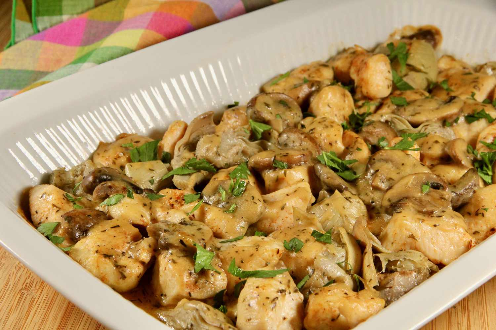

Romantic Chicken
Description
Easy, moist, flavorful and aromatic -- the white wine, artichokes and mushrooms make this chicken dish the to way to any man's heart! Delicious served with buttered noodles and fresh greens.
Ingredients
- 4 skinless, boneless chicken breast halves
- salt and pepper to taste
- 1 tablespoon olive oil
- 1 tablespoon butter
- 1 (14 ounce) can marinated quartered artichoke hearts, drained, liquid reserved
- 1 cup sliced fresh mushrooms
- 1 cup white wine
- 1 tablespoon capers
Steps
- Season chicken with salt and pepper. Heat oil and butter in a large skillet over medium heat. Brown chicken in oil and butter for 5 to 7 minutes per side; remove from skillet, and set aside.
- Place artichoke hearts and mushrooms in the skillet, and saute until mushrooms are brown and tender. Return chicken to skillet, and pour in reserved artichoke liquid and wine. Reduce heat to low, and simmer for about 10 to 15 minutes, until chicken is no longer pink and juices run clear.
- Stir in capers, and simmer for another 5 minutes. Remove from heat; serve immediately.